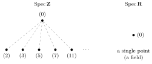
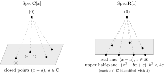
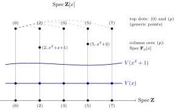

Conventions. As in the book, “ring” means commutative ring with \(1\). \(\Nil\) is the nilradical, \(\Jac\) the Jacobson radical, \(\rad(\fa)\) the radical of an ideal, \(X=\Spec A\). For a ring homomorphism \(f:A\to B\), \(\fa^\ex=Bf(\fa)\) and \(\fb^\ci=f^{-1}(\fb)\).
Facts used freely from the text: (1.5) every non-unit lies in a maximal ideal; (1.7) \(\Nil\) is an ideal; (1.8) \(\Nil=\bigcap\) of all primes; (1.9) \(x\in\Jac\iff 1-xy\) is a unit for all \(y\); (1.14) \(\rad(\fa)=\bigcap_{\fp\supseteq\fa}\fp\).
This chapter covers the three in-text exercises (1.12, 1.13, 1.18) and the 28 end-of-chapter exercises. Exercise 27 contains no assignment as printed (it is exposition leading into Exercise 28); I comment on it at the appropriate place.
In-text exercises
Exercise 1.12
Let \(\fa,\fb,\fc,\fa_i,\fb_i\) be ideals of a ring \(A\), and recall the ideal quotient \((\fa:\fb)=\{x\in A: x\fb\subseteq\fa\}\). Prove:
- (i)
\(\fa\subseteq(\fa:\fb)\);
- (ii)
\((\fa:\fb)\fb\subseteq\fa\);
- (iii)
\(((\fa:\fb):\fc)=(\fa:\fb\fc)=((\fa:\fc):\fb)\);
- (iv)
\(\bigl(\bigcap_i\fa_i:\fb\bigr)=\bigcap_i(\fa_i:\fb)\);
- (v)
\(\bigl(\fa:\sum_i\fb_i\bigr)=\bigcap_i(\fa:\fb_i)\).
Solution
(i) If \(x\in\fa\) then \(x\fb\subseteq\fa\) because \(\fa\) is an ideal; so \(\fa\subseteq(\fa:\fb)\).
(ii) \((\fa:\fb)\fb\) is generated by products \(xy\) with \(x\in(\fa:\fb)\), \(y\in\fb\); each lies in \(\fa\) by definition of \((\fa:\fb)\).
(iii) For \(x\in A\): \(x\in((\fa:\fb):\fc)\iff x\fc\subseteq(\fa:\fb)\iff xcb\in\fa\) for all \(c\in\fc,b\in\fb\) \(\iff x\,(\fb\fc)\subseteq\fa\) (the ideal \(\fb\fc\) consists of finite sums of products \(bc\), and \(\fa\) is closed under sums) \(\iff x\in(\fa:\fb\fc)\). The condition “\(xcb\in\fa\) for all \(b,c\)” is symmetric in \(\fb,\fc\), so also \(((\fa:\fc):\fb)=(\fa:\fb\fc)\).
(iv) \(x\fb\subseteq\bigcap_i\fa_i\iff x\fb\subseteq\fa_i\) for every \(i\).
(v) If \(x\fb_i\subseteq\fa\) for all \(i\), then \(x\sum b_i\subseteq\fa\) (sums of elements of \(\fa\)). Conversely \(\fb_i\subseteq\sum_j\fb_j\). Hence \((\fa:\sum_i\fb_i)=\bigcap_i(\fa:\fb_i)\). ∎
Exercise 1.13
Recall \(\rad(\fa)=\{x\in A:x^n\in\fa\text{ for some }n>0\}\). Prove:
- (i)
\(\rad(\fa)\supseteq\fa\);
- (ii)
\(\rad(\rad(\fa))=\rad(\fa)\);
- (iii)
\(\rad(\fa\fb)=\rad(\fa\cap\fb)=\rad(\fa)\cap\rad(\fb)\);
- (iv)
\(\rad(\fa)=(1)\iff\fa=(1)\);
- (v)
\(\rad(\fa+\fb)=\rad(\rad(\fa)+\rad(\fb))\);
- (vi)
if \(\fp\) is prime, \(\rad(\fp^n)=\fp\) for all \(n>0\).
Solution
(i) \(x\in\fa\Rightarrow x^1\in\fa\).
(ii) \(\rad(\rad(\fa))\supseteq\rad(\fa)\) by (i). If \(x^n\in\rad(\fa)\) then \((x^n)^m\in\fa\) for some \(m\), so \(x\in\rad(\fa)\).
(iii) Since \(\fa\fb\subseteq\fa\cap\fb\) we get \(\rad(\fa\fb)\subseteq\rad(\fa\cap\fb)\); since \(\fa\cap\fb\subseteq\fa,\fb\) we get \(\rad(\fa\cap\fb)\subseteq\rad(\fa)\cap\rad(\fb)\). If \(x\in\rad(\fa)\cap\rad(\fb)\), say \(x^m\in\fa\), \(x^n\in\fb\), then \(x^{m+n}\in\fa\fb\), so \(x\in\rad(\fa\fb)\). All three coincide.
(iv) \(\rad(\fa)=(1)\iff 1\in\rad(\fa)\iff 1^n\in\fa\iff\fa=(1)\).
(v) \(\fa\subseteq\rad\fa\), so \(\fa+\fb\subseteq\rad\fa+\rad\fb\), hence \(\rad(\fa+\fb)\subseteq\rad(\rad\fa+\rad\fb)\). Conversely \(\rad\fa,\rad\fb\subseteq\rad(\fa+\fb)\), so \(\rad\fa+\rad\fb\subseteq\rad(\fa+\fb)\), and applying \(\rad\) and (ii): \(\rad(\rad\fa+\rad\fb)\subseteq\rad(\rad(\fa+\fb))=\rad(\fa+\fb)\).
(vi) If \(\fp\) is prime, \(x^k\in\fp\Rightarrow x\in\fp\), so \(\rad(\fp)=\fp\). Then \(\fp^n\subseteq\fp\) gives \(\rad(\fp^n)\subseteq\fp\); and \(x\in\fp\Rightarrow x^n\in\fp^n\) gives \(\fp\subseteq\rad(\fp^n)\). ∎
Exercise 1.18
Let \(f:A\to B\) be a ring homomorphism, \(\fa_1,\fa_2\) ideals of \(A\) and \(\fb_1,\fb_2\) ideals of \(B\). Then
Deduce that the set \(E\) of extended ideals is closed under sum and product, and the set \(C\) of contracted ideals is closed under the other three operations (\(\cap\), \(:\), \(\rad\)).
Solution
Let \(f:A\to B\).
Extensions.
- •
\((\fa_1+\fa_2)^\ex=\fa_1^\ex+\fa_2^\ex\): \(\supseteq\) since \(\fa_i\subseteq\fa_1+\fa_2\); \(\subseteq\) since the generators \(f(x_1+x_2)=f(x_1)+f(x_2)\) lie in \(\fa_1^\ex+\fa_2^\ex\).
- •
\((\fa_1\cap\fa_2)^\ex\subseteq\fa_1^\ex\cap\fa_2^\ex\) since \(\fa_1\cap\fa_2\subseteq\fa_i\).
- •
\((\fa_1\fa_2)^\ex=\fa_1^\ex\fa_2^\ex\): the generators \(f(xy)=f(x)f(y)\) of the left side lie in the right; conversely the right side is generated by products \(\bigl(\sum b_if(x_i)\bigr)\bigl(\sum b'_jf(x'_j)\bigr)=\sum b_ib'_jf(x_ix'_j)\in(\fa_1\fa_2)^\ex\).
- •
\((\fa_1:\fa_2)^\ex\subseteq(\fa_1^\ex:\fa_2^\ex)\): if \(x\in(\fa_1:\fa_2)\) then \(f(x)f(y)=f(xy)\in f(\fa_1)\) for \(y\in\fa_2\), so \(f(x)\fa_2^\ex\subseteq\fa_1^\ex\), i.e. \(f(x)\in(\fa_1^\ex:\fa_2^\ex)\); the latter is an ideal, hence contains the ideal generated by these \(f(x)\).
- •
\(\rad(\fa)^\ex\subseteq\rad(\fa^\ex)\): if \(x^n\in\fa\) then \(f(x)^n\in\fa^\ex\), so \(f(x)\in\rad(\fa^\ex)\), an ideal.
Contractions. Preimages respect all inclusions, so:
- •
\((\fb_1+\fb_2)^\ci\supseteq\fb_1^\ci+\fb_2^\ci\) (monotonicity).
- •
\((\fb_1\cap\fb_2)^\ci=\fb_1^\ci\cap\fb_2^\ci\) (preimage of an intersection).
- •
\((\fb_1\fb_2)^\ci\supseteq\fb_1^\ci\fb_2^\ci\): for \(x\in\fb_1^\ci,y\in\fb_2^\ci\), \(f(xy)=f(x)f(y)\in\fb_1\fb_2\).
- •
\((\fb_1:\fb_2)^\ci\subseteq(\fb_1^\ci:\fb_2^\ci)\): if \(f(x)\fb_2\subseteq\fb_1\) and \(y\in\fb_2^\ci\) then \(f(xy)=f(x)f(y)\in\fb_1\), so \(xy\in\fb_1^\ci\).
- •
\(\rad(\fb)^\ci=\rad(\fb^\ci)\): \(x\in\rad(\fb)^\ci\iff f(x)^n\in\fb\) some \(n\iff x^n\in\fb^\ci\) some \(n\).
\(E\) is closed under \(+,\cdot\); \(C\) is closed under \(\cap,:,\rad\). Recall \(C=\{\fa:\fa=\fa^{\ex\ci}\}\), \(E=\{\fb:\fb=\fb^{\ci\ex}\}\).
If \(\fb_1,\fb_2\in E\), then \(\fb_1+\fb_2=\fb_1^{\ci\ex}+\fb_2^{\ci\ex}=(\fb_1^\ci+\fb_2^\ci)^\ex\in E\) and \(\fb_1\fb_2=(\fb_1^\ci)^\ex(\fb_2^\ci)^\ex=(\fb_1^\ci\fb_2^\ci)^\ex\in E\) (extended ideals are in \(E\) by 1.17).
If \(\fa_1,\fa_2,\fa\in C\) then, using the displayed inclusions and \(\fa=\fa^{\ex\ci}\):
The reverse inclusions hold always (1.17(i)), so these ideals lie in \(C\). ∎
End-of-chapter exercises
Exercise 1
Let \(x\) be a nilpotent element of a ring \(A\). Show that \(1+x\) is a unit of \(A\). Deduce that the sum of a nilpotent element and a unit is a unit.
Solution
Let \(x^n=0\). Then \((1+x)\bigl(1-x+x^2-\cdots+(-1)^{n-1}x^{n-1}\bigr)=1+(-1)^{n-1}x^n=1\). If \(u\) is a unit and \(x\) nilpotent, then \(u^{-1}x\) is nilpotent (commutativity) so \(u+x=u(1+u^{-1}x)\) is a product of units. ∎
Exercise 2
Let \(A\) be a ring and let \(A[x]\) be the ring of polynomials in an indeterminate \(x\), with coefficients in \(A\). Let \(f=a_0+a_1x+\cdots+a_nx^n\in A[x]\). Prove that
- (i)
\(f\) is a unit in \(A[x]\iff a_0\) is a unit in \(A\) and \(a_1,\dots,a_n\) are nilpotent. [If \(b_0+b_1x+\cdots+b_mx^m\) is the inverse of \(f\), prove by induction on \(r\) that \(a_n^{r+1}b_{m-r}=0\). Hence show that \(a_n\) is nilpotent, and then use Ex. 1.]
- (ii)
\(f\) is nilpotent \(\iff a_0,a_1,\dots,a_n\) are nilpotent.
- (iii)
\(f\) is a zero-divisor \(\iff\) there exists \(a\ne0\) in \(A\) such that \(af=0\). [Choose a polynomial \(g=b_0+b_1x+\cdots+b_mx^m\) of least degree \(m\) such that \(fg=0\). Then \(a_nb_m=0\), hence \(a_ng=0\) (because \(a_ng\) annihilates \(f\) and has degree \(<m\)). Now show by induction that \(a_{n-r}g=0\) \((0\le r\le n)\).]
- (iv)
\(f\) is said to be primitive if \((a_0,a_1,\dots,a_n)=(1)\). Prove that if \(f,g\in A[x]\), then \(fg\) is primitive \(\iff f\) and \(g\) are primitive.
Solution
Let \(f=a_0+a_1x+\dots+a_nx^n\).
(i) \(f\) is a unit \(\iff a_0\) is a unit and \(a_1,\dots,a_n\) are nilpotent.
(\(\Leftarrow\)) Each \(a_ix^i\) (\(i\ge1\)) is nilpotent, and nilpotents form an ideal (1.7), so \(f-a_0\) is nilpotent; apply Exercise 1.
(\(\Rightarrow\)) Let \(fg=1\), \(g=b_0+\dots+b_mx^m\). Then \(a_0b_0=1\), so \(a_0\) is a unit. We prove by induction on \(r\) (\(0\le r\le m\)) that
Assume \(n\ge1\) (else nothing to prove). \(S(0)\): the coefficient of \(x^{n+m}\) in \(fg\) is \(a_nb_m=0\). For \(r\ge1\) assume \(S(0),\dots,S(r-1)\). The coefficient of \(x^{n+m-r}\) (\(\ge n\ge 1\)) in \(fg\) is zero: \(\sum_{k=0}^{r}a_{n-k}b_{m-r+k}=0\) (with \(a_i=0\) for \(i<0\)). Multiply by \(a_n^{r}\):
and each bracket vanishes by \(S(r-k)\). So \(S(r)\) holds. Taking \(r=m\): \(a_n^{m+1}b_0=0\), and \(b_0\) is a unit, so \(a_n\) is nilpotent.
Now \(a_nx^n\) is nilpotent, so \(f-a_nx^n\) is a unit (unit minus nilpotent, Ex. 1) of degree \(<n\), with the same \(a_0,\dots,a_{n-1}\). By induction on \(n\) (the case \(n=0\) is trivial) \(a_1,\dots,a_{n-1}\) are nilpotent.
(ii) \(f\) nilpotent \(\iff\) all \(a_i\) nilpotent. (\(\Leftarrow\)) as in (i): \(\Nil(A[x])\) is an ideal containing each \(a_ix^i\). (\(\Rightarrow\)) Let \(\fp\) be a prime of \(A\). Then \(\fp A[x]\) (polynomials with all coefficients in \(\fp\)) is prime in \(A[x]\), because \(A[x]/\fp A[x]\cong(A/\fp)[x]\) is a domain. A nilpotent \(f\) lies in every prime of \(A[x]\) (1.8), so all \(a_i\in\fp\). Hence \(a_i\in\bigcap\fp=\Nil(A)\).
(iii) \(f\) is a zero-divisor \(\iff\exists a\ne0\) with \(af=0\). (\(\Leftarrow\)) clear. (\(\Rightarrow\)) Choose \(g=b_0+\dots+b_mx^m\ne0\) with \(fg=0\) and \(m\) minimal. Then \(a_nb_m=0\), so \(a_ng\) has degree \(<m\) and \(f(a_ng)=0\); minimality gives \(a_ng=0\). We show by induction on \(r=0,\dots,n\) that \(a_{n-r}g=0\). Suppose \(a_{n-s}g=0\) for \(s<r\). The coefficient of \(x^{n+m-r}\) in \(fg\) is \(\sum_{s=0}^{r}a_{n-s}b_{m-r+s}=0\); the terms with \(s<r\) vanish, so \(a_{n-r}b_m=0\). Then \(a_{n-r}g\) has degree \(<m\) and is killed by \(f\), so \(a_{n-r}g=0\). Hence \(a_ig=0\) for all \(i\); in particular \(a:=b_m\neq0\) satisfies \(a_ib_m=0\) for all \(i\), i.e. \(b_mf=0\).
(iv) For \(f,g\in A[x]\): \(fg\) primitive \(\iff f\) and \(g\) primitive. Let \(c(f)\) be the ideal generated by the coefficients. Each coefficient of \(fg\) is a sum of products \(a_ib_j\), so \(c(fg)\subseteq c(f)\cap c(g)\); hence \(fg\) primitive forces \(c(f)=c(g)=(1)\). Conversely suppose \(f,g\) primitive but \(c(fg)\ne(1)\). Then \(c(fg)\subseteq\fm\) for a maximal ideal \(\fm\), so \(fg\in\fm A[x]\), which is prime (\(A[x]/\fm A[x]=(A/\fm)[x]\) is a domain). Thus \(f\in\fm A[x]\) or \(g\in\fm A[x]\), i.e. \(c(f)\subseteq\fm\) or \(c(g)\subseteq\fm\), contradicting primitivity. ∎
Exercise 3
Generalize the results of Exercise 2 to a polynomial ring \(A[x_1,\dots,x_r]\) in several indeterminates.
Solution
Write \(A_r=A[x_1,\dots,x_r]\). The statements are:
- (i)
\(f\in A_r\) is a unit \(\iff\) its constant term is a unit of \(A\) and all its other coefficients are nilpotent;
- (ii)
\(f\) is nilpotent \(\iff\) all its coefficients are nilpotent;
- (iii)
\(f\) is a zero-divisor \(\iff\exists a\in A\), \(a\ne0\), \(af=0\);
- (iv)
\(f,g\) are primitive (coefficients generate \((1)\)) \(\iff fg\) is primitive.
(i), (ii): induct on \(r\), using \(A_r=A_{r-1}[x_r]\). Write \(f=\sum_kf_kx_r^k\) with \(f_k\in A_{r-1}\). By Ex. 2, \(f\) is a unit iff \(f_0\) is a unit and \(f_k\) (\(k\ge1\)) are nilpotent in \(A_{r-1}\); by induction this says: the constant term of \(f_0\) (= constant term of \(f\)) is a unit and all other coefficients of \(f_0\) are nilpotent, and all coefficients of the \(f_k\), \(k\ge1\), are nilpotent. Same for (ii).
(iii) (\(\Leftarrow\)) clear. (\(\Rightarrow\)) (Kronecker substitution.) Let \(fg=0\), \(g\neq0\). Choose \(d\) larger than every exponent of every variable occurring in \(f\) or \(g\), and let \(\kappa:A_r\to A[t]\) be the ring homomorphism \(x_i\mapsto t^{d^{\,i-1}}\). By uniqueness of base-\(d\) expansions, distinct monomials with all exponents \(<d\) go to distinct powers of \(t\); so \(\kappa\) is injective on the polynomials all of whose exponents are \(<d\) (this includes \(f,g\), and \(af\) for \(a\in A\)). Thus \(\kappa(g)\ne0\) and \(\kappa(f)\kappa(g)=0\), so \(\kappa(f)\) is a zero-divisor of \(A[t]\), and by Ex. 2(iii) there is \(a\ne0\) with \(a\kappa(f)=\kappa(af)=0\); injectivity gives \(af=0\).
(iv) Identical to Ex. 2(iv): \(c(fg)\subseteq c(f)\cap c(g)\) for \(\Rightarrow\), and for \(\Leftarrow\) use \(\fm A_r\) prime since \(A_r/\fm A_r\cong(A/\fm)[x_1,\dots,x_r]\) is a domain. ∎
Exercise 4
In the ring \(A[x]\), the Jacobson radical is equal to the nilradical.
Solution
Always \(\Nil\subseteq\Jac\) (nilpotent elements lie in every prime, in particular every maximal ideal). Let \(f=\sum a_ix^i\in\Jac(A[x])\). By 1.9 (with \(y=x\)), \(1-xf=1-a_0x-a_1x^2-\cdots\) is a unit. By Ex. 2(i), all of \(-a_0,-a_1,\dots\) are nilpotent. By Ex. 2(ii), \(f\) is nilpotent. ∎
Exercise 5
Let \(A\) be a ring and let \(A[[x]]\) be the ring of formal power series \(f=\sum_{n=0}^\infty a_nx^n\) with coefficients in \(A\). Show that
- (i)
\(f\) is a unit in \(A[[x]]\iff a_0\) is a unit in \(A\).
- (ii)
If \(f\) is nilpotent, then \(a_n\) is nilpotent for all \(n\ge0\). Is the converse true? (See Chapter 7, Exercise 2.)
- (iii)
\(f\) belongs to the Jacobson radical of \(A[[x]]\iff a_0\) belongs to the Jacobson radical of \(A\).
- (iv)
The contraction of a maximal ideal \(\fm\) of \(A[[x]]\) is a maximal ideal of \(A\), and \(\fm\) is generated by \(\fm^\ci\) and \(x\).
- (v)
Every prime ideal of \(A\) is the contraction of a prime ideal of \(A[[x]]\).
Solution
Let \(f=\sum a_nx^n\).
(i) If \(fg=1\) then \(a_0b_0=1\). Conversely if \(a_0\) is a unit, define \(b_0=a_0^{-1}\) and recursively \(b_n=-a_0^{-1}\sum_{i=1}^na_ib_{n-i}\); then \(g=\sum b_nx^n\) satisfies \(fg=1\).
(ii) Let \(f^N=0\) and let \(\fp\) be a prime of \(A\). Reducing coefficients gives a ring homomorphism \(A[[x]]\to(A/\fp)[[x]]\), and \((A/\fp)[[x]]\) is a domain (the product of the lowest-order terms \(\bar a_rx^r,\bar b_sx^s\) of two nonzero series has coefficient \(\bar a_r\bar b_s\ne0\) at \(x^{r+s}\)). So \(\bar f=0\), i.e. all \(a_n\in\fp\). Hence \(a_n\in\bigcap\fp=\Nil(A)\).
The converse is false. Let \(k\) be a field and \(A=k[t_1,t_2,\dots]/(t_1,t_2^2,t_3^3,\dots)\). Each \(t_n\) is nilpotent (\(t_n^n=0\)). Put \(f=\sum_{n\ge1}t_nx^n\). Suppose \(f^N=0\) and take \(n>N\). The coefficient of \(x^{nN}\) in \(f^N\) is \(\sum t_{i_1}\cdots t_{i_N}\) over ordered tuples with \(i_1+\dots+i_N=nN\). \(A\) has the \(k\)-basis of monomials \(\prod t_i^{e_i}\) with \(e_i<i\); the monomial \(t_n^N\) (note \(N<n\)) is such a basis element, and it arises from only one tuple, \((n,\dots,n)\), while every other tuple gives a different monomial (or \(0\)). So this coefficient is nonzero, contradicting \(f^N=0\). So \(f\) is not nilpotent although all its coefficients are.
(iii) By 1.9, \(f\in\Jac(A[[x]])\iff1-fg\) is a unit for all \(g\in A[[x]]\) \(\iff\) (by (i)) \(1-a_0b_0\) is a unit in \(A\) for all \(g\), i.e. for all \(b_0\in A\) (constants are allowed as \(g\)) \(\iff a_0\in\Jac(A)\).
(iv) Let \(\fm\) be maximal in \(A[[x]]\). First \(x\in\fm\): otherwise \(\fm+(x)=(1)\), so \(1=h+gx\) with \(h\in\fm\), and \(h=1-gx\) is a unit by (i), absurd. Let \(\varepsilon:A[[x]]\to A\), \(f\mapsto a_0\), with kernel \((x)\); it is surjective. Since \((x)\subseteq\fm\), \(\fm=\varepsilon^{-1}(\fm')\) with \(\fm'=\varepsilon(\fm)\) maximal in \(A\) (Prop. 1.1: \(\fm/(x)\) is maximal in \(A[[x]]/(x)\cong A\)). Constants satisfy \(\varepsilon(a)=a\), so \(\fm^\ci=\fm\cap A=\fm'\) is maximal in \(A\). Finally every \(f\in\fm\) is \(a_0+xh\) with \(a_0\in\fm'=\fm^\ci\), so \(\fm=\fm^\ex+(x)\), i.e. \(\fm\) is generated by \(\fm^\ci\) and \(x\); the reverse inclusion is obvious.
(v) For a prime \(\fp\) of \(A\) let \(P=\varepsilon^{-1}(\fp)=\{f:a_0\in\fp\}\). Then \(A[[x]]/P\cong A/\fp\) is a domain, so \(P\) is prime, and \(P^\ci=P\cap A=\fp\). ∎
Exercise 6
A ring \(A\) is such that every ideal not contained in the nilradical contains a non-zero idempotent (that is, an element \(e\) such that \(e^2=e\ne0\)). Prove that the nilradical and Jacobson radical of \(A\) are equal.
Solution
\(\Nil\subseteq\Jac\) always. Suppose \(\Jac\not\subseteq\Nil\). Then the ideal \(\Jac\) contains an idempotent \(e\ne0\). By 1.9, \(1-e=1-e\cdot1\) is a unit. But \(e(1-e)=e-e^2=0\), so \(e=0\), contradiction. Hence \(\Jac\subseteq\Nil\). ∎
Exercise 7
Let \(A\) be a ring in which every element \(x\) satisfies \(x^n=x\) for some \(n>1\) (depending on \(x\)). Show that every prime ideal in \(A\) is maximal.
Solution
Let \(\fp\) be prime and \(D=A/\fp\), a domain in which every element also satisfies \(\bar x^n=\bar x\), some \(n>1\). If \(\bar x\ne0\) then \(\bar x(\bar x^{n-1}-1)=0\) forces \(\bar x^{n-1}=1\), i.e. \(\bar x\cdot\bar x^{n-2}=1\); so \(\bar x\) is a unit. Thus \(D\) is a field and \(\fp\) is maximal. ∎
Exercise 8
Let \(A\) be a ring \(\ne0\). Show that the set of prime ideals of \(A\) has minimal elements with respect to inclusion.
Solution
Let \(\Sigma\) be the set of primes, ordered by reverse inclusion; it is nonempty since \(A\ne0\) has a maximal ideal. We show every chain \((\fp_\alpha)\) has an upper bound (i.e. the intersection \(\fp=\bigcap\fp_\alpha\) is prime). \(1\notin\fp\). Suppose \(xy\in\fp\) and \(x\notin\fp\), say \(x\notin\fp_\beta\). Let \(\alpha\) be arbitrary. If \(\fp_\alpha\subseteq\fp_\beta\), then \(x\notin\fp_\alpha\) and \(xy\in\fp_\alpha\) give \(y\in\fp_\alpha\). If \(\fp_\beta\subseteq\fp_\alpha\), then \(xy\in\fp_\beta\) and \(x\notin\fp_\beta\) give \(y\in\fp_\beta\subseteq\fp_\alpha\). So \(y\in\fp\). By Zorn, \(\Sigma\) has a maximal element for reverse inclusion, i.e. a minimal prime ideal. (Indeed every prime contains a minimal prime.) ∎
Exercise 9
Let \(\fa\) be an ideal \(\ne(1)\) in a ring \(A\). Show that \(\fa=\rad(\fa)\iff\fa\) is an intersection of prime ideals.
Solution
(\(\Rightarrow\)) \(\rad(\fa)=\bigcap_{\fp\supseteq\fa}\fp\) by 1.14. (\(\Leftarrow\)) If \(\fa=\bigcap_i\fp_i\) then \(\rad(\fa)\subseteq\rad(\fp_i)=\fp_i\) for each \(i\), so \(\rad(\fa)\subseteq\fa\); and \(\fa\subseteq\rad(\fa)\) always. ∎
Exercise 10
Let \(A\) be a ring, \(\Nil\) its nilradical. Show that the following are equivalent:
- (i)
\(A\) has exactly one prime ideal;
- (ii)
every element of \(A\) is either a unit or nilpotent;
- (iii)
\(A/\Nil\) is a field.
Solution
(Assume \(A\ne0\).) (i)\(\Rightarrow\)(ii): If \(\fp\) is the only prime then \(\Nil=\fp\) (1.8). A non-unit lies in a maximal ideal, which is prime, hence equals \(\fp=\Nil\), so the non-unit is nilpotent. (ii)\(\Rightarrow\)(iii): \(A/\Nil\ne0\). If \(\bar x\ne0\) then \(x\) is not nilpotent, hence a unit, hence \(\bar x\) is a unit. (iii)\(\Rightarrow\)(i): \(\Nil\) is maximal, hence prime. Every prime contains \(\Nil=\bigcap\fp\), hence equals the maximal ideal \(\Nil\). ∎
Exercise 11
A ring \(A\) is Boolean if \(x^2=x\) for all \(x\in A\). In a Boolean ring \(A\), show that
- (i)
\(2x=0\) for all \(x\in A\);
- (ii)
every prime ideal \(\fp\) is maximal, and \(A/\fp\) is a field with two elements;
- (iii)
every finitely generated ideal in \(A\) is principal.
Solution
(i) \(2x=(x+x)^2=\ldots\): \((2x)^2=4x^2=4x\) and \((2x)^2=2x\), so \(4x=2x\), hence \(2x=0\).
(ii) Let \(\fp\) be prime. In the domain \(A/\fp\) every \(\bar x\) satisfies \(\bar x(\bar x-1)=0\), so \(\bar x\in\{0,1\}\). Thus \(A/\fp=\{0,1\}\cong\mathbf F_2\) is a field and \(\fp\) is maximal.
(iii) For \(x,y\in A\) put \(z=x+y+xy\in(x,y)\). Then \(xz=x+xy+xy=x+2xy=x\) and likewise \(yz=y\), so \((x,y)\subseteq(z)\subseteq(x,y)\). By induction on the number of generators every finitely generated ideal is principal. ∎
Exercise 12
A local ring contains no idempotent \(\ne0,1\).
Solution
Let \(\fm\) be the maximal ideal and \(e^2=e\), so \(e(1-e)=0\). Not both \(e,1-e\) lie in \(\fm\) (else \(1\in\fm\)). If \(e\notin\fm\), \(e\) is a unit (all elements outside \(\fm\) are, by 1.6), so \(1-e=0\), \(e=1\). If \(1-e\notin\fm\), then \(1-e\) is a unit and \(e=0\). ∎
Exercise 13
(Construction of an algebraic closure of a field, E. Artin.) Let \(K\) be a field and let \(\Sigma\) be the set of all irreducible monic polynomials \(f\) in one indeterminate with coefficients in \(K\). Let \(A\) be the polynomial ring over \(K\) generated by indeterminates \(x_f\), one for each \(f\in\Sigma\). Let \(\fa\) be the ideal of \(A\) generated by the polynomials \(f(x_f)\) for all \(f\in\Sigma\). Show that \(\fa\ne(1)\).
Let \(\fm\) be a maximal ideal of \(A\) containing \(\fa\), and let \(K_1=A/\fm\). Then \(K_1\) is an extension field of \(K\) in which each \(f\in\Sigma\) has a root. Repeat the construction with \(K_1\) in place of \(K\), obtaining a field \(K_2\), and so on. Let \(L=\bigcup_{n=1}^\infty K_n\). Then \(L\) is a field in which each \(f\in\Sigma\) splits completely into linear factors. Let \(\bar K\) be the set of all elements of \(L\) which are algebraic over \(K\). Then \(\bar K\) is an algebraic closure of \(K\).
Solution
Let \(A=K[x_f:f\in\Sigma]\) and \(\fa=\bigl(f(x_f):f\in\Sigma\bigr)\).
\(\fa\ne(1)\). Suppose \(1=\sum_{i=1}^ng_if_i(x_{f_i})\) with \(g_i\in A\) and \(f_1,\dots,f_n\in\Sigma\) distinct. Let \(F\) be a finite extension field of \(K\) in which each \(f_i\) has a root \(\alpha_i\) (adjoin roots one at a time: \(K[t]/(\text{irreducible factor})\)). The \(K\)-algebra homomorphism \(A\to F\) with \(x_{f_i}\mapsto\alpha_i\) (\(i\le n\)) and all other \(x_f\mapsto0\) sends the relation to \(1=0\), absurd.
The tower. Take a maximal ideal \(\fm\supseteq\fa\) (1.4) and \(K_1=A/\fm\). Since \(K\) is a field, \(K\to K_1\) is injective; the image of \(x_f\) is a root of \(f\) in \(K_1\). Repeat with \(K_1\) in place of \(K\) to get \(K_2\), etc., and put \(L=\bigcup_nK_n\), a field (union of a chain of fields).
Claim: every non-constant \(h\in K_n[t]\) has a root in \(K_{n+1}\). Let \(g\) be a monic irreducible factor of \(h\) over \(K_n\); \(g\) has a root in \(K_{n+1}\) by construction, and it is a root of \(h\). Hence if \(f\in K[t]\) has degree \(d\), it has a root in \(K_1\), so \(f=(t-\alpha_1)f_1\) in \(K_1[t]\); \(f_1\) has a root in \(K_2\); etc. After \(d\) steps \(f\) splits into linear factors in \(K_d[t]\subseteq L[t]\). So every \(f\in\Sigma\) splits completely in \(L\).
\(\bar K\) is an algebraic closure. Let \(\bar K\subseteq L\) be the set of elements algebraic over \(K\); it is a subfield (standard: \(K(\alpha,\beta)\) is finite over \(K\)). Every \(f\in K[t]\) splits into linear factors in \(L[t]\), and its roots there are algebraic over \(K\), so \(f\) splits completely in \(\bar K[t]\). Now let \(h\in\bar K[t]\) be irreducible and let \(\beta\) be a root of \(h\) in the extension field \(E=\bar K[t]/(h)\). Then \(\beta\) is algebraic over \(\bar K\), which is algebraic over \(K\), so \(\beta\) is algebraic over \(K\) (finite towers), i.e. a root of some \(f\in K[t]\), \(f\ne0\). As \(f=\prod(t-\gamma_i)\) with \(\gamma_i\in\bar K\), \(\beta=\gamma_i\in\bar K\). So \(h\) has a root in \(\bar K\), hence is linear. Thus \(\bar K\) is algebraically closed and algebraic over \(K\), i.e. an algebraic closure of \(K\). ∎
Exercise 14
In a ring \(A\), let \(\Sigma\) be the set of all ideals in which every element is a zero-divisor. Show that the set \(\Sigma\) has maximal elements and that every maximal element of \(\Sigma\) is a prime ideal. Hence the set of zero-divisors in \(A\) is a union of prime ideals.
Solution
(Assume \(A\ne0\).) \(\Sigma\ni(0)\) is nonempty. The union of a chain in \(\Sigma\) is an ideal all of whose elements are zero-divisors; so Zorn gives maximal elements of \(\Sigma\), and more precisely, for each ideal \(\fa\in\Sigma\), a maximal element of \(\Sigma\) containing it.
Let \(\fp\) be maximal in \(\Sigma\). \(\fp\ne(1)\) since \(1\) is not a zero-divisor. Suppose \(xy\in\fp\) with \(x,y\notin\fp\). By maximality \(\fp+(x)\notin\Sigma\) and \(\fp+(y)\notin\Sigma\), so there exist non-zero-divisors \(u=p_1+ax\) and \(v=p_2+by\) (\(p_i\in\fp\)). Then \(uv=p_1p_2+p_1by+p_2ax+ab\,xy\in\fp\), and \(uv\) is a non-zero-divisor (a product of two non-zero-divisors), contradicting \(\fp\in\Sigma\). So \(\fp\) is prime.
Finally let \(D\) be the set of zero-divisors. Each maximal element of \(\Sigma\) is a prime contained in \(D\). Conversely, if \(x\in D\) with \(xy=0\), \(y\ne0\), then every \(ax\) is a zero-divisor (\(axy=0\)), so \((x)\in\Sigma\) and \((x)\) lies in a maximal element of \(\Sigma\), a prime. Therefore \(D\) is the union of these primes. ∎
Exercise 15
(The prime spectrum of a ring.) Let \(A\) be a ring and let \(X\) be the set of all prime ideals of \(A\). For each subset \(E\) of \(A\), let \(V(E)\) denote the set of all prime ideals of \(A\) which contain \(E\). Prove that
- (i)
if \(\fa\) is the ideal generated by \(E\), then \(V(E)=V(\fa)=V(\rad(\fa))\);
- (ii)
\(V(0)=X\), \(V(1)=\emptyset\);
- (iii)
if \((E_i)_{i\in I}\) is any family of subsets of \(A\), then \(V\bigl(\bigcup_{i\in I}E_i\bigr)=\bigcap_{i\in I}V(E_i)\);
- (iv)
\(V(\fa\cap\fb)=V(\fa\fb)=V(\fa)\cup V(\fb)\) for any ideals \(\fa,\fb\) of \(A\).
These results show that the sets \(V(E)\) satisfy the axioms for closed sets in a topological space. The resulting topology is called the Zariski topology. The topological space \(X\) is called the prime spectrum of \(A\), and is written \(\Spec(A)\).
Solution
(i) A prime contains \(E\iff\) it contains the ideal \(\fa=(E)\) generated by \(E\). A prime \(\fp\supseteq\fa\) contains \(\rad(\fa)\) (if \(x^n\in\fa\subseteq\fp\) then \(x\in\fp\)); conversely \(\fp\supseteq\rad(\fa)\supseteq\fa\). So \(V(E)=V(\fa)=V(\rad\fa)\).
(ii) Every prime contains \(0\): \(V(0)=X\). No prime contains \(1\): \(V(1)=\emptyset\).
(iii) \(\fp\supseteq\bigcup E_i\iff\fp\supseteq E_i\) for all \(i\). So \(V(\bigcup E_i)=\bigcap V(E_i)\).
(iv) \(\fa\fb\subseteq\fa\cap\fb\subseteq\fa,\fb\) gives \(V(\fa)\cup V(\fb)\subseteq V(\fa\cap\fb)\subseteq V(\fa\fb)\). If \(\fp\supseteq\fa\fb\) and \(\fp\not\supseteq\fa\), pick \(x\in\fa\setminus\fp\); for each \(y\in\fb\), \(xy\in\fp\), so \(y\in\fp\), i.e. \(\fp\supseteq\fb\). So \(V(\fa\fb)\subseteq V(\fa)\cup V(\fb)\). All four sets agree. ∎
Exercise 16
Draw pictures of \(\Spec(\Z)\), \(\Spec(\R)\), \(\Spec(\C[x])\), \(\Spec(\R[x])\), \(\Spec(\Z[x])\).
Solution
In each picture a line from a point \(\fq\) upward to \(\fp\) means \(\fq\subset\fp\) (so \(\fp\) lies in the closure of \(\fq\): \(\fq\) is “more generic”). Closed sets are \(V(E)\); closed points are maximal ideals.

\(\Spec\Z\): points \((0)\) and \((p)\), \(p\) prime. \(V(n)=\{(p):p\mid n\}\) for \(n\neq0\) is finite, so the proper closed sets are the finite sets of closed points; \((0)\) is dense (the generic point). \(\Spec\R\): one point \((0)\).

\(\Spec\C[x]\): \(\C[x]\) is a PID, nonzero primes are \((x-a)\) (all maximal), so the space is the complex line \(\C\) together with a generic point \((0)\); proper closed sets are finite sets of closed points. \(\Spec\R[x]\): nonzero primes are \((x-a)\) and \((x^2+bx+c)\) with \(b^2<4c\). The latter correspond to pairs of conjugate roots \(\{z,\bar z\}\), so the closed points form \(\C/(z\sim\bar z)\cong\{\operatorname{Im}z\ge0\}\): the real axis (for \((x-a)\)) and the open upper half-plane. Plus the generic point.
\(\Spec\Z[x]\). Let \(\fp\) be prime and \(\fq=\fp\cap\Z\).
- •
\(\fq=0\): \(\fp\) corresponds to a prime of \(\Q[x]\) (localize), so \(\fp=0\) or \(\fp=(f)\) with \(f\) irreducible and primitive (Gauss's lemma), e.g. \((x),(x^2+1),(2x-1)\).
- •
\(\fq=(p)\): \(\fp/(p)\) is a prime of \(\mathbf F_p[x]\), so \(\fp=(p)\) or \(\fp=(p,g)\) with \(g\) monic and irreducible mod \(p\). These last are exactly the maximal ideals.
Picture: the map \(\Spec\Z[x]\to\Spec\Z\) has fibre \(\Spec\mathbf F_p[x]\) (a line with generic point \((p)\)) over \((p)\) and fibre \(\Spec\Q[x]\) over \((0)\). The curves \(V(f)\) cut every column.

∎
Exercise 17
For each \(f\in A\), let \(X_f\) denote the complement of \(V(f)\) in \(X=\Spec(A)\). The sets \(X_f\) are open. Show that they form a basis of open sets for the Zariski topology, and that
- (i)
\(X_f\cap X_g=X_{fg}\);
- (ii)
\(X_f=\emptyset\iff f\) is nilpotent;
- (iii)
\(X_f=X\iff f\) is a unit;
- (iv)
\(X_f=X_g\iff\rad((f))=\rad((g))\);
- (v)
\(X\) is quasi-compact (that is, every open covering of \(X\) has a finite subcovering);
- (vi)
more generally, each \(X_f\) is quasi-compact;
- (vii)
an open subset of \(X\) is quasi-compact if and only if it is a finite union of sets \(X_f\).
The sets \(X_f\) are called the basic open sets of \(X=\Spec(A)\). [To prove (v), remark that it is enough to consider a covering of \(X\) by basic open sets \(X_{f_i}\) \((i\in I)\). Show that the \(f_i\) generate the unit ideal and hence that there is an equation of the form \(1=\sum_{i\in J}g_if_i\) \((g_i\in A)\) where \(J\) is some finite subset of \(I\). Then the \(X_{f_i}\) \((i\in J)\) cover \(X\).]
Solution
Note \(X_f=X\setminus V(f)=\{\fp:f\notin\fp\}\), and \(V(f):=V(\{f\})=V((f))\).
Basis. Every open set is \(X\setminus V(E)=X\setminus\bigcap_{f\in E}V(f)=\bigcup_{f\in E}X_f\) (15(iii)). So the \(X_f\) form a basis.
(i) \(\fp\notin V(f)\cup V(g)\iff f,g\notin\fp\iff fg\notin\fp\) (prime), so \(X_f\cap X_g=X_{fg}\).
(ii) \(X_f=\emptyset\iff f\) lies in every prime \(\iff f\in\Nil\) (1.8).
(iii) \(X_f=X\iff f\) lies in no prime \(\iff f\) lies in no maximal ideal \(\iff f\) is a unit (1.5).
(iv) \(X_f=X_g\iff V(f)=V(g)\iff\rad((f))=\rad((g))\): since \(\rad(\fa)=\bigcap_{\fp\in V(\fa)}\fp\) (1.14), \(V(\fa)=V(\fb)\) implies \(\rad\fa=\rad\fb\), and the converse is 15(i).
(v) Every open cover can be refined to a cover by basic open sets \(X_{f_i}\) (\(i\in I\)), and a finite subcover of the refinement gives a finite subcover of the original (pick for each of finitely many \(X_{f_i}\) one member of the original cover containing it). So take \(X=\bigcup_{i\in I}X_{f_i}\). Then \(V(\{f_i\})=\bigcap V(f_i)=\emptyset\), so the ideal generated by the \(f_i\) is \((1)\) (else it lies in a maximal ideal, which is a prime in \(V(\{f_i\})\)). Hence \(1=\sum_{i\in J}g_if_i\) with \(J\subseteq I\) finite. If a prime \(\fp\) were outside \(\bigcup_{i\in J}X_{f_i}\), all \(f_i\in\fp\) (\(i\in J\)), giving \(1\in\fp\). So \(X=\bigcup_{i\in J}X_{f_i}\).
(vi) As in (v) it suffices to consider \(X_f\subseteq\bigcup_{i\in I}X_{g_i}\). Then every prime containing all \(g_i\) contains \(f\): \(f\in\bigcap_{\fp\supseteq(g_i)}\fp=\rad((g_i:i\in I))\), so \(f^n=\sum_{i\in J}h_ig_i\) for some \(n\) and finite \(J\). Then \(X_f=X_{f^n}\subseteq\bigcup_{i\in J}X_{g_i}\): a prime \(\fp\) with \(f\notin\fp\) cannot contain all \(g_i\), \(i\in J\) (it would contain \(f^n\)).
(vii) (\(\Leftarrow\)) A finite union of quasi-compact sets is quasi-compact, and \(X_f\) is quasi-compact by (vi). (\(\Rightarrow\)) An open \(U\) is a union of basic opens; if \(U\) is quasi-compact, finitely many suffice. ∎
Exercise 18
For psychological reasons it is sometimes convenient to denote a prime ideal of \(A\) by a letter such as \(x\) or \(y\) when thinking of it as a point of \(X=\Spec(A)\). When thinking of \(x\) as a prime ideal of \(A\), we denote it by \(\fp_x\) (logically, of course, it is the same thing). Show that
- (i)
the set \(\{x\}\) is closed (we say that \(x\) is a “closed point”) in \(\Spec(A)\iff\fp_x\) is maximal;
- (ii)
\(\overline{\{x\}}=V(\fp_x)\);
- (iii)
\(y\in\overline{\{x\}}\iff\fp_x\subseteq\fp_y\);
- (iv)
\(X\) is a \(T_0\)-space (this means that if \(x,y\) are distinct points of \(X\), then either there is a neighborhood of \(x\) which does not contain \(y\), or else there is a neighborhood of \(y\) which does not contain \(x\)).
Solution
Write \(x\leftrightarrow\fp_x\).
(ii) A closed set containing \(x\) is \(V(E)\) with \(E\subseteq\fp_x\), hence \(V(E)\supseteq V(\fp_x)\). So the smallest closed set containing \(x\) is \(V(\fp_x)\): \(\overline{\{x\}}=V(\fp_x)\).
(i) By (ii), \(\{x\}\) is closed \(\iff V(\fp_x)=\{\fp_x\}\iff\) no prime strictly contains \(\fp_x\iff\fp_x\) is maximal (if \(\fp_x\) is not maximal it lies in a maximal ideal, a different prime; the converse is clear).
(iii) \(y\in\overline{\{x\}}=V(\fp_x)\iff\fp_x\subseteq\fp_y\).
(iv) Let \(x\neq y\), i.e. \(\fp_x\neq\fp_y\). Then \(\fp_x\not\subseteq\fp_y\) or \(\fp_y\not\subseteq\fp_x\). In the first case \(y\notin\overline{\{x\}}=V(\fp_x)\), so \(X\setminus V(\fp_x)\) is an open neighbourhood of \(y\) not containing \(x\); in the second case symmetrically there is a neighbourhood of \(x\) missing \(y\). ∎
Exercise 19
A topological space \(X\) is said to be irreducible if \(X\ne\emptyset\) and if every pair of non-empty open sets in \(X\) intersect, or equivalently if every non-empty open set is dense in \(X\). Show that \(\Spec(A)\) is irreducible if and only if the nilradical of \(A\) is a prime ideal.
Solution
Every non-empty open set contains a non-empty basic open set, so \(X\) is irreducible iff \(X\neq\emptyset\) and any two non-empty basic opens meet. Now \(X\ne\emptyset\iff A\ne0\iff 1\notin\Nil\iff\Nil\ne(1)\). By 17(ii), \(X_f\neq\emptyset\iff f\notin\Nil\), and \(X_f\cap X_g=X_{fg}\) (17(i)). So the second condition reads: \(f,g\notin\Nil\Rightarrow fg\notin\Nil\), i.e. \(\Nil\) is prime (together with \(\Nil\ne(1)\)). ∎
Exercise 20
Let \(X\) be a topological space.
- (i)
If \(Y\) is an irreducible (Exercise 19) subspace of \(X\), then the closure \(\bar Y\) of \(Y\) in \(X\) is irreducible.
- (ii)
Every irreducible subspace of \(X\) is contained in a maximal irreducible subspace.
- (iii)
The maximal irreducible subspaces of \(X\) are closed and cover \(X\). They are called the irreducible components of \(X\). What are the irreducible components of a Hausdorff space?
- (iv)
If \(A\) is a ring and \(X=\Spec(A)\), then the irreducible components of \(X\) are the closed sets \(V(\fp)\), where \(\fp\) is a minimal prime ideal of \(A\) (Exercise 8).
Solution
(i) Let \(Y\) be irreducible and \(U,V\) non-empty open subsets of \(\bar Y\). Pick a point of \(U\); as it lies in the closure of \(Y\) and \(U\) is open in \(\bar Y\) (so \(U=\bar Y\cap U'\), \(U'\) open in \(X\)), \(U'\) meets \(Y\); so \(U\cap Y\ne\emptyset\), similarly \(V\cap Y\ne\emptyset\). These are non-empty open subsets of \(Y\), hence meet, so \(U\cap V\ne\emptyset\). Also \(\bar Y\ne\emptyset\).
(ii) Let \(Y\) be irreducible and apply Zorn to the set of irreducible subspaces containing \(Y\), ordered by inclusion. If \((Y_\alpha)\) is a chain, \(Z=\bigcup Y_\alpha\) is irreducible: if \(U,V\) are non-empty open in \(Z\), choose \(u\in U\cap Y_\alpha\), \(v\in V\cap Y_\beta\) with (say) \(Y_\alpha\subseteq Y_\beta\); then \(U\cap Y_\beta,V\cap Y_\beta\) are non-empty and open in \(Y_\beta\) so they meet. Hence maximal irreducible subspaces exist above every irreducible subspace.
(iii) If \(Y\) is maximal irreducible then \(\bar Y\) is irreducible by (i) and contains \(Y\), so \(Y=\bar Y\) is closed. Each point \(\{x\}\) is irreducible, so by (ii) lies in a maximal irreducible subspace; these cover \(X\).
Hausdorff spaces. If \(Y\) is irreducible with two distinct points \(x,y\), take disjoint open neighbourhoods \(U\ni x\), \(V\ni y\) in \(X\); then \(U\cap Y\), \(V\cap Y\) are disjoint non-empty open sets of \(Y\), contradiction. So irreducible subspaces are single points: the irreducible components of a Hausdorff space are its points.
(iv) Let \(X=\Spec A\). For a closed set \(Y=V(\fa)\) put \(I(Y)=\bigcap_{\fq\in Y}\fq\); then \(Y=V(I(Y))\) (as \(V(\fa)=V(\rad\fa)\) and \(I(Y)=\rad\fa\)). Claim: a closed \(Y\neq\emptyset\) is irreducible \(\iff I(Y)\) is prime. (\(\Rightarrow\)) \(I(Y)\neq(1)\). If \(xy\in I(Y)\), then every \(\fq\in Y\) contains \(x\) or \(y\), so \(Y=(Y\cap V(x))\cup(Y\cap V(y))\). If both pieces were proper, their complements in \(Y\) would be non-empty disjoint open subsets of \(Y\), contradicting irreducibility. So \(Y\subseteq V(x)\) or \(V(y)\), i.e. \(x\in I(Y)\) or \(y\in I(Y)\). (\(\Leftarrow\)) Let \(\fp=I(Y)\) be prime, so \(Y=V(\fp)\). If \(Y=Y_1\cup Y_2\) with \(Y_i\) closed, then \(\fp=I(Y_1)\cap I(Y_2)\supseteq I(Y_1)I(Y_2)\), so (primality) \(\fp\supseteq I(Y_1)\), say; then \(Y=V(\fp)\subseteq V(I(Y_1))=Y_1\). So \(Y\) is not a union of two proper closed subsets, i.e. irreducible.
Hence the closed irreducible subsets are exactly the \(V(\fp)\), \(\fp\) prime, and \(V(\fp)\subseteq V(\fq)\iff\fq\subseteq\fp\). The maximal ones are the \(V(\fp)\) with \(\fp\) a minimal prime. By (iii) maximal irreducible subspaces are closed, so these are exactly the irreducible components. ∎
Exercise 21
Let \(\phi:A\to B\) be a ring homomorphism. Let \(X=\Spec(A)\) and \(Y=\Spec(B)\). If \(\fq\in Y\), then \(\phi^{-1}(\fq)\) is a prime ideal of \(A\), i.e. a point of \(X\). Hence \(\phi\) induces a mapping \(\phi^*:Y\to X\). Show that
- (i)
If \(f\in A\) then \(\phi^{*-1}(X_f)=Y_{\phi(f)}\), and hence that \(\phi^*\) is continuous.
- (ii)
If \(\fa\) is an ideal of \(A\), then \(\phi^{*-1}(V(\fa))=V(\fa^\ex)\).
- (iii)
If \(\fb\) is an ideal of \(B\), then \(\overline{\phi^*(V(\fb))}=V(\fb^\ci)\).
- (iv)
If \(\phi\) is surjective, then \(\phi^*\) is a homeomorphism of \(Y\) onto the closed subset \(V(\Ker(\phi))\) of \(X\). (In particular, \(\Spec(A)\) and \(\Spec(A/\Nil)\), where \(\Nil\) is the nilradical of \(A\), are naturally homeomorphic.)
- (v)
If \(\phi\) is injective, then \(\phi^*(Y)\) is dense in \(X\). More precisely, \(\phi^*(Y)\) is dense in \(X\iff\Ker(\phi)\subseteq\Nil\).
- (vi)
Let \(\psi:B\to C\) be another ring homomorphism. Then \((\psi\circ\phi)^*=\phi^*\circ\psi^*\).
- (vii)
Let \(A\) be an integral domain with just one non-zero prime ideal \(\fp\), and let \(K\) be the field of fractions of \(A\). Let \(B=(A/\fp)\times K\). Define \(\phi:A\to B\) by \(\phi(x)=(\bar x,x)\), where \(\bar x\) is the image of \(x\) in \(A/\fp\). Show that \(\phi^*\) is bijective but not a homeomorphism.
Solution
Let \(Y=\Spec B\), \(\phi^*(\fq)=\phi^{-1}(\fq)\).
(i) \(\fq\in\phi^{*-1}(X_f)\iff f\notin\phi^{-1}(\fq)\iff\phi(f)\notin\fq\iff\fq\in Y_{\phi(f)}\). Preimages of basic opens are open, so \(\phi^*\) is continuous.
(ii) \(\fq\in\phi^{*-1}(V(\fa))\iff\phi^{-1}(\fq)\supseteq\fa\iff\fq\supseteq\phi(\fa)\iff\fq\supseteq\fa^\ex\).
(iii) The closure of \(S\subseteq X\) is \(V\bigl(\bigcap_{\fp\in S}\fp\bigr)\) (the smallest \(V(E)\) containing \(S\) has \(E\subseteq\bigcap_S\fp\)). For \(S=\phi^*(V(\fb))=\{\phi^{-1}(\fq):\fq\supseteq\fb\}\):
(by 1.14 and Ex. 1.18). Hence \(\overline{\phi^*(V(\fb))}=V(\rad(\fb^\ci))=V(\fb^\ci)\) by 15(i).
(iv) Let \(\phi\) be surjective. \(\phi^*\) maps into \(V(\Ker\phi)\) since \(\phi^{-1}(\fq)\supseteq\phi^{-1}(0)\). It is injective: \(\phi(\phi^{-1}(\fq))=\fq\) by surjectivity, so \(\phi^{-1}(\fq)=\phi^{-1}(\fq')\Rightarrow\fq=\fq'\). It is onto \(V(\Ker\phi)\): if \(\fp\supseteq\Ker\phi\) is prime then \(\phi(\fp)\) is a prime of \(B\) and \(\phi^{-1}(\phi(\fp))=\fp+\Ker\phi=\fp\). It is closed: for \(\fb\subseteq B\), \(\phi^*(V(\fb))=V(\fb^\ci)\) (given \(\fp\supseteq\fb^\ci\) then \(\phi(\fp)\supseteq\phi(\phi^{-1}\fb)=\fb\) and \(\phi^*(\phi(\fp))=\fp\); the other inclusion from (iii)). A continuous closed bijection onto \(V(\Ker\phi)\) is a homeomorphism. For \(A\to A/\Nil\) we have \(V(\Nil)=X\), so \(\Spec(A/\Nil)\cong\Spec A\).
(v) By (iii) with \(\fb=0\): \(\overline{\phi^*(Y)}=V(\Ker\phi)\). This equals \(X\) iff every prime contains \(\Ker\phi\) iff \(\Ker\phi\subseteq\Nil\). In particular if \(\phi\) is injective, \(\phi^*(Y)\) is dense.
(vi) \((\psi\phi)^{-1}(\fr)=\phi^{-1}(\psi^{-1}(\fr))\), i.e. \((\psi\circ\phi)^*=\phi^*\circ\psi^*\).
(vii) Let \(A\) be a domain with exactly one non-zero prime \(\fp\), \(K=\operatorname{Frac}A\), \(B=(A/\fp)\times K\), \(\phi(x)=(\bar x,x)\) (an injective ring homomorphism). Since \(A\) has a non-zero prime it is not a field, so it has a maximal ideal, which is a non-zero prime, hence \(\fp\) is maximal and \(A/\fp\) is a field. Thus \(B\) is a product of two fields and \(\Spec B=\{\fq_1,\fq_2\}\) with \(\fq_1=0\times K\), \(\fq_2=(A/\fp)\times0\); both are closed points, so \(\Spec B\) is discrete. We have \(\phi^*(\fq_1)=\{x:\bar x=0\}=\fp\) and \(\phi^*(\fq_2)=\{x:x=0\}=0\). So \(\phi^*\) is a bijection onto \(\Spec A=\{0,\fp\}\). In \(\Spec A\) the closed sets are \(\emptyset,\{\fp\}=V(\fp),X\) (the point \(0\) is dense), so \(\{0\}\) is open but \(\{\fp\}\) is not open; yet \(\{\fq_1\}\) is open in \(\Spec B\) and maps to \(\{\fp\}\). So \(\phi^*\) is not open, hence not a homeomorphism. ∎
Exercise 22
Let \(A=\prod_{i=1}^nA_i\) be the direct product of rings \(A_i\). Show that \(\Spec(A)\) is the disjoint union of open (and closed) subspaces \(X_i\), where \(X_i\) is canonically homeomorphic with \(\Spec(A_i)\).
Conversely, let \(A\) be any ring. Show that the following statements are equivalent:
- (i)
\(X=\Spec(A)\) is disconnected.
- (ii)
\(A\cong A_1\times A_2\) where neither of the rings \(A_1,A_2\) is the zero ring.
- (iii)
\(A\) contains an idempotent \(\ne0,1\).
In particular, the spectrum of a local ring is always connected (Exercise 12).
Solution
Part 1. Let \(A=\prod_{i=1}^nA_i\) and \(e_i=(0,\dots,1,\dots,0)\). These are idempotents with \(e_ie_j=0\) (\(i\ne j\)), \(\sum e_i=1\). For a prime \(\fp\): \(e_i(1-e_i)=0\) so \(e_i\in\fp\) or \(1-e_i\in\fp\), not both. Since \(e_ie_j=0\in\fp\) at most one \(e_i\notin\fp\), and not all lie in \(\fp\) (as \(\sum e_i=1\)). So \(X=\bigsqcup_iX_{e_i}\) (disjoint union of open sets), hence each \(X_{e_i}\) is also closed. Moreover \(X_{e_i}=V(1-e_i)\) (by the above dichotomy). Let \(p_i:A\to A_i\) be the projection, surjective with kernel \((1-e_i)\). By 21(iv), \(\Spec A_i\to V(\Ker p_i)=V(1-e_i)=X_{e_i}\) is a homeomorphism.
Part 2. For a ring \(A\) we show (i)\(\Rightarrow\)(iii)\(\Rightarrow\)(ii)\(\Rightarrow\)(i).
(i)\(\Rightarrow\)(iii). Let \(X=V(\fa)\sqcup V(\fb)\) with both non-empty (disconnected means a disjoint union of two non-empty closed, equivalently open, sets). From \(V(\fa)\cap V(\fb)=V(\fa+\fb)=\emptyset\) we get \(\fa+\fb=(1)\) (else a maximal ideal contains both). From \(V(\fa)\cup V(\fb)=V(\fa\fb)=X\) we get \(\fa\fb\subseteq\Nil\). Write \(1=x+y\) with \(x\in\fa\), \(y\in\fb\); then \(xy\in\Nil\), say \((xy)^n=0\). Expanding \(1=(x+y)^{2n}\) shows \(1\in(x^n,y^n)\): write \(1=e+f\), \(e\in(x^n)\subseteq\fa\), \(f\in(y^n)\subseteq\fb\). Then \(ef\in(x^ny^n)=0\), so \(e(1-e)=ef=0\): \(e\) is idempotent. If \(e=0\) then \(1=f\in\fb\), \(V(\fb)=\emptyset\), contradiction; if \(e=1\) then \(1\in\fa\), \(V(\fa)=\emptyset\), contradiction. So \(e\ne0,1\).
(iii)\(\Rightarrow\)(ii). For an idempotent \(e\ne0,1\), the map \(A\to Ae\times A(1-e)\), \(x\mapsto(xe,x(1-e))\) is a ring isomorphism (injective: \(xe=0=x(1-e)\Rightarrow x=0\); surjective: \(ae+b(1-e)\mapsto(ae,b(1-e))\)), where \(Ae\) has identity \(e\ne0\) and \(A(1-e)\) has identity \(1-e\ne0\); neither factor is the zero ring.
(ii)\(\Rightarrow\)(i). By Part 1, \(\Spec(A_1\times A_2)=X_1\sqcup X_2\) with \(X_i\cong\Spec A_i\) non-empty (since \(A_i\ne0\)), open and closed.
Local rings. A local ring has no idempotents \(\neq0,1\) (Ex. 12), so (iii) fails and \(\Spec A\) is connected. ∎
Exercise 23
Let \(A\) be a Boolean ring (Exercise 11), and let \(X=\Spec(A)\).
- (i)
For each \(f\in A\), the set \(X_f\) (Exercise 17) is both open and closed in \(X\).
- (ii)
Let \(f_1,\dots,f_n\in A\). Show that \(X_{f_1}\cup\cdots\cup X_{f_n}=X_f\) for some \(f\in A\).
- (iii)
The sets \(X_f\) are the only subsets of \(X\) which are both open and closed. [Let \(Y\subseteq X\) be both open and closed. Since \(Y\) is open, it is a union of basic open sets \(X_f\). Since \(Y\) is closed and \(X\) is quasi-compact (Exercise 17), \(Y\) is quasi-compact. Hence \(Y\) is a finite union of basic open sets; now use (ii) above.]
- (iv)
\(X\) is a compact Hausdorff space.
Solution
Let \(A\) be Boolean, so \(f(1-f)=0\) for all \(f\).
(i) Each prime contains exactly one of \(f,1-f\); so \(X_f=\{\fp:f\notin\fp\}=\{\fp:1-f\in\fp\}=V(1-f)\) is closed. It is open by definition.
(ii) By Ex. 11(iii), \((f_1,\dots,f_n)=(f)\) for some \(f\). Then \(V(f)=V(\{f_1,\dots,f_n\})=\bigcap V(f_i)\), so \(X_f=\bigcup X_{f_i}\).
(iii) Each \(X_f\) is clopen. Conversely let \(Y\) be clopen. As \(Y\) is open it is a union of basic open sets; as \(Y\) is closed in the quasi-compact space \(X\) (17(v)), \(Y\) is quasi-compact; hence \(Y=X_{f_1}\cup\dots\cup X_{f_n}=X_f\) by (ii).
(iv) \(X\) is quasi-compact (17(v)). Hausdorff: let \(\fp\ne\fq\) be primes; they are maximal (Ex. 11(ii)), so \(\fp\not\subseteq\fq\), and there is \(f\in\fp\setminus\fq\). Then \(\fq\in X_f\), and \(1-f\notin\fp\) (else \(1\in\fp\)) so \(\fp\in X_{1-f}\), and \(X_f\cap X_{1-f}=X_{f(1-f)}=X_0=\emptyset\). So \(X\) is compact Hausdorff. ∎
Exercise 24
Let \(L\) be a lattice, in which the sup and inf of two elements \(a,b\) are denoted by \(a\vee b\) and \(a\wedge b\) respectively. \(L\) is a Boolean lattice (or Boolean algebra) if
- (i)
\(L\) has a least element and a greatest element (denoted by \(0\), \(1\) respectively).
- (ii)
Each of \(\vee,\wedge\) is distributive over the other.
- (iii)
Each \(a\in L\) has a unique “complement” \(a'\in L\) such that \(a\vee a'=1\) and \(a\wedge a'=0\).
(For example, the set of all subsets of a set, ordered by inclusion, is a Boolean lattice.)
Let \(L\) be a Boolean lattice. Define addition and multiplication in \(L\) by the rules
Verify that in this way \(L\) becomes a Boolean ring, say \(A(L)\).
Conversely, starting from a Boolean ring \(A\), define an ordering on \(A\) as follows: \(a\le b\) means that \(a=ab\). Show that, with respect to this ordering, \(A\) is a Boolean lattice. [The sup and inf are given by \(a\vee b=a+b+ab\) and \(a\wedge b=ab\), and the complement by \(a'=1-a\).] In this way we obtain a one-to-one correspondence between (isomorphism classes of) Boolean rings and (isomorphism classes of) Boolean lattices.
Solution
Lattice facts. In a Boolean lattice \(L\): \(a\wedge1=a\), \(a\vee0=a\), \(a\wedge0=0\), \(a\vee1=1\); \(a''=a\) (since \(a\) is a complement of \(a'\) and complements are unique); and De Morgan: \((a\vee b)'=a'\wedge b'\), because \((a\vee b)\vee(a'\wedge b')=(a\vee b\vee a')\wedge(a\vee b\vee b')=1\) and \((a\vee b)\wedge a'\wedge b'=0\) (distributivity), and by uniqueness; dually \((a\wedge b)'=a'\vee b'\).
\(L\mapsto A(L)\) is a Boolean ring. Define \(a+b=(a\wedge b')\vee(a'\wedge b)\), \(ab=a\wedge b\).
- •
\(+\) is commutative (the formula is symmetric); \(a+0=(a\wedge1)\vee(a'\wedge0)=a\); \(a+a=(a\wedge a')\vee(a'\wedge a)=0\), so \(-a=a\).
- •
Associativity. If \(s=a+b\) then \(s'=(a'\vee b)\wedge(a\vee b')=(a\wedge b)\vee(a'\wedge b')\) (De Morgan and distributivity). So
\[(a+b)+c=(s\wedge c')\vee(s'\wedge c)=(a\wedge b'\wedge c')\vee(a'\wedge b\wedge c')\vee(a'\wedge b'\wedge c)\vee(a\wedge b\wedge c),\]which is symmetric in \(a,b,c\). Hence \((a+b)+c=(b+c)+a=a+(b+c)\).
- •
\(\wedge\) is associative, commutative, with identity \(1\).
- •
Distributivity: \(a(b+c)=(a\wedge b\wedge c')\vee(a\wedge b'\wedge c)\), while \(ab+ac=\bigl((a\wedge b)\wedge(a'\vee c')\bigr)\vee\bigl((a'\vee b')\wedge a\wedge c\bigr)=(a\wedge b\wedge c')\vee(a\wedge b'\wedge c)\) (terms containing \(a\wedge a'\) vanish).
- •
\(a\cdot a=a\wedge a=a\): Boolean.
\(A\mapsto L(A)\) is a Boolean lattice. Let \(A\) be Boolean (so \(2x=0\)) and define \(a\le b\iff a=ab\).
- •
Partial order: \(a=a\cdot a\); \(a=ab,b=ba\Rightarrow a=b\); \(a=ab,b=bc\Rightarrow a=abc=ac\).
- •
\(a\wedge b=ab\): \(ab\le a,b\); and \(c\le a,c\le b\) give \(c\cdot ab=(ca)b=cb=c\). \(a\vee b=a+b+ab\): \(a(a+b+ab)=a+2ab=a\), so \(a\le a+b+ab\), same for \(b\); if \(a,b\le c\) then \((a+b+ab)c=a+b+ab\).
- •
Least element \(0\) (\(0=0\cdot a\)), greatest element \(1\) (\(a=a\cdot1\)).
- •
\(a(b\vee c)=ab+ac+abc=(a\wedge b)\vee(a\wedge c)\); and \((a\vee b)\wedge(a\vee c)=(a+b+ab)(a+c+ac)=a+bc+abc=a\vee(b\wedge c)\) (collecting the nine products and using \(2x=0\)).
- •
Complement \(a'=1-a=1+a\): \(a\wedge a'=a+a^2=0\), \(a\vee a'=a+(1+a)+0=1\), and if \(ac=0\), \(a+c+ac=1\) then \(c=1+a\): unique.
The two constructions are inverse. Starting from \(A\), form \(L(A)\) and then \(A(L(A))\): its product is \(a\wedge b=ab\), and its sum is \((a\wedge b')\vee(a'\wedge b)=x\vee y\) with \(x=a(1+b)=a+ab\), \(y=b+ab\); since \(xy=a b+ab+ab+ab=0\), \(x\vee y=x+y=a+b+2ab=a+b\). So we recover \(A\). Starting from \(L\), form \(A(L)\) and then \(L(A(L))\): \(a\le b\iff a=a\wedge b\) is the original order of \(L\), and \(\vee,\wedge\) are determined by the order. So we recover \(L\). Hence the two constructions give a bijection between isomorphism classes of Boolean rings and Boolean lattices. ∎
Exercise 25
From the last two exercises deduce Stone's theorem, that every Boolean lattice is isomorphic to the lattice of open-and-closed subsets of some compact Hausdorff topological space.
Solution
Let \(L\) be a Boolean lattice, \(A=A(L)\) its Boolean ring (Ex. 24), \(X=\Spec A\), a compact Hausdorff space (Ex. 23). By 23(i),(iii) the clopen subsets of \(X\) are exactly the \(X_f\), \(f\in A\). Define \(\theta:A\to\{\text{clopen sets}\}\), \(f\mapsto X_f\); it is onto.
Injective. If \(X_f=X_g\) then \(\rad((f))=\rad((g))\) (17(iv)). In a Boolean ring \(g^n=g\), so \(\rad(\fa)=\fa\) for every ideal \(\fa\); hence \((f)=(g)\), i.e. \(f=gu\), \(g=fv\), so \(fg=gug=gu=f\) and likewise \(fg=g\): \(f=g\).
Order. \(f\le g\iff f=fg\iff X_f=X_{fg}=X_f\cap X_g\iff X_f\subseteq X_g\) (using 17(i) and injectivity of \(\theta\) for \(\Leftarrow\)).
A bijection preserving the order in both directions is an isomorphism of lattices (sup and inf are determined by the order). Since the order of \(L\) is the order of \(L(A(L))\), \(L\cong\) the lattice of open-and-closed subsets of the compact Hausdorff space \(X\) under \(\cup,\cap\). ∎
Exercise 26
Let \(A\) be a ring. The subspace of \(\Spec(A)\) consisting of the maximal ideals of \(A\), with the induced topology, is called the maximal spectrum of \(A\) and is denoted by \(\Max(A)\). For arbitrary commutative rings it does not have the nice functorial properties of \(\Spec(A)\) (see Exercise 21), because the inverse image of a maximal ideal under a ring homomorphism need not be maximal.
Let \(X\) be a compact Hausdorff space and let \(C(X)\) denote the ring of all real-valued continuous functions on \(X\) (add and multiply functions by adding and multiplying their values). For each \(x\in X\), let \(\fm_x\) be the set of all \(f\in C(X)\) such that \(f(x)=0\). The ideal \(\fm_x\) is maximal, because it is the kernel of the (surjective) homomorphism \(C(X)\to\R\) which takes \(f\) to \(f(x)\). If \(\tilde X\) denotes \(\Max(C(X))\), we have therefore defined a mapping \(\mu:X\to\tilde X\), namely \(x\mapsto\fm_x\).
We shall show that \(\mu\) is a homeomorphism of \(X\) onto \(\tilde X\).
- (i)
Let \(\fm\) be any maximal ideal of \(C(X)\), and let \(V=V(\fm)\) be the set of common zeros of the functions in \(\fm\): that is, \(V=\{x\in X:f(x)=0\text{ for all }f\in\fm\}\). Suppose that \(V\) is empty. Then for each \(x\in X\) there exists \(f_x\in\fm\) such that \(f_x(x)\ne0\). Since \(f_x\) is continuous, there is an open neighborhood \(U_x\) of \(x\) in \(X\) on which \(f_x\) does not vanish. By compactness a finite number of the neighborhoods, say \(U_{x_1},\dots,U_{x_n}\), cover \(X\). Let \(f=f_{x_1}^2+\cdots+f_{x_n}^2\). Then \(f\) does not vanish at any point of \(X\), hence is a unit in \(C(X)\). But this contradicts \(f\in\fm\). Hence \(V\) is not empty. Let \(x\) be a point of \(V\). Then \(\fm\subseteq\fm_x\), hence \(\fm=\fm_x\) because \(\fm\) is maximal. Hence \(\mu\) is surjective.
- (ii)
By Urysohn's lemma (this is the only non-trivial fact required in the argument) the continuous functions separate the points of \(X\). Hence \(x\ne y\Rightarrow\fm_x\ne\fm_y\), and therefore \(\mu\) is injective.
- (iii)
Let \(f\in C(X)\); let \(U_f=\{x\in X:f(x)\ne0\}\) and let \(\tilde U_f=\{\fm\in\tilde X:f\notin\fm\}\). Show that \(\mu(U_f)=\tilde U_f\). The open sets \(U_f\) (resp. \(\tilde U_f\)) form a basis of the topology of \(X\) (resp. \(\tilde X\)) and therefore \(\mu\) is a homeomorphism.
Thus \(X\) can be reconstructed from the ring of functions \(C(X)\).
Solution
Parts (i) and (ii) are proved in the text (compactness gives a point of \(V(\fm)\), hence \(\mu\) is surjective; Urysohn's lemma gives injectivity: for \(x\ne y\) there is a continuous \(f\) with \(f(x)=0\), \(f(y)=1\), so \(f\in\fm_x\setminus\fm_y\)). So \(\mu:X\to\tilde X=\Max C(X)\), \(x\mapsto\fm_x\), is a bijection. It remains to do (iii).
(iii) For \(f\in C(X)\): \(x\in U_f\iff f(x)\ne0\iff f\notin\fm_x\iff\mu(x)\in\tilde U_f\). As \(\mu\) is bijective, \(\mu(U_f)=\tilde U_f\).
Bases. The \(U_f\) are open (continuity). They form a basis: let \(W\subseteq X\) be open and \(x\in W\). \(X\) is compact Hausdorff hence normal, so Urysohn's lemma gives a continuous \(g:X\to[0,1]\) with \(g(x)=1\) and \(g=0\) on the closed set \(X\setminus W\). Then \(x\in U_g\subseteq W\). The \(\tilde U_f=\tilde X\cap X_f\) form a basis of the subspace topology of \(\tilde X\subseteq\Spec C(X)\) (the \(X_f\) are a basis of \(\Spec\)).
Thus \(\mu\) is a bijection carrying a basis of \(X\) onto a basis of \(\tilde X\), so \(\mu\) and \(\mu^{-1}\) are open maps, i.e. \(\mu\) is a homeomorphism. ∎
Exercise 27
(Affine algebraic varieties.) Let \(k\) be an algebraically closed field and let \(f_\alpha(t_1,\dots,t_n)=0\) be a set of polynomial equations in \(n\) variables with coefficients in \(k\). The set \(X\) of all points \(x=(x_1,\dots,x_n)\in k^n\) which satisfy these equations is an affine algebraic variety.
Consider the set of all polynomials \(g\in k[t_1,\dots,t_n]\) with the property that \(g(x)=0\) for all \(x\in X\). This set is an ideal \(I(X)\) in the polynomial ring, and is called the ideal of the variety \(X\). The quotient ring \(P(X)=k[t_1,\dots,t_n]/I(X)\) is the ring of polynomial functions on \(X\), because two polynomials \(g,h\) define the same polynomial function on \(X\) if and only if \(g-h\) vanishes at every point of \(X\), that is, if and only if \(g-h\in I(X)\).
Let \(\xi_i\) \((1\le i\le n)\) be the image of \(t_i\) in \(P(X)\). The \(\xi_i\) are the coordinate functions on \(X\): if \(x\in X\), then \(\xi_i(x)\) is the \(i\)th coordinate of \(x\). \(P(X)\) is generated as a \(k\)-algebra by the coordinate functions, and is called the coordinate ring (or affine algebra) of \(X\).
As in Exercise 26, for each \(x\in X\) let \(\fm_x\) be the ideal of all \(f\in P(X)\) such that \(f(x)=0\); it is a maximal ideal of \(P(X)\). Hence, if \(\tilde X=\Max(P(X))\), we have defined a mapping \(\mu:X\to\tilde X\), namely \(x\mapsto\fm_x\). It is easy to show that \(\mu\) is injective: if \(x\ne y\), we must have \(x_i\ne y_i\) for some \(i\), and hence \(\xi_i-x_i\) is in \(\fm_x\) but not in \(\fm_y\), so that \(\fm_x\ne\fm_y\). What is less obvious (but still true) is that \(\mu\) is surjective. This is one form of Hilbert's Nullstellensatz (see Chapter 7).
Solution
As printed, Exercise 27 sets up notation: \(k=\bar k\), \(X\subseteq k^n\) an affine variety, \(I(X)\) its ideal, \(P(X)=k[t_1,\dots,t_n]/I(X)\), and the map \(\mu:X\to\tilde X=\Max P(X)\), \(x\mapsto\fm_x\), and then asserts that \(\mu\) is injective and (“less obvious but still true”) surjective. There is no explicit task, but for completeness the assertions:
\(\fm_x\) is maximal: it is the kernel of the surjective evaluation \(P(X)\to k\), \(f\mapsto f(x)\) (surjective since \(k\subseteq P(X)\)).
\(\mu\) injective: if \(x\neq y\) then \(x_i\ne y_i\) for some \(i\) and the coordinate function \(\xi_i-x_i\) lies in \(\fm_x\setminus\fm_y\).
\(\mu\) surjective (this is the weak Nullstellensatz): a maximal ideal \(\fm\subset P(X)\) pulls back to a maximal ideal \(M\subset k[t_1,\dots,t_n]\) containing \(I(X)\); since \(k\) is algebraically closed, \(M=(t_1-a_1,\dots,t_n-a_n)\) for some \(a\in k^n\). Every defining equation \(f_\alpha\) of \(X\) lies in \(I(X)\subseteq M\), hence \(f_\alpha(a)=0\), so \(a\in X\) and \(\fm=\fm_a\). (This uses the Nullstellensatz, proved in Chapter 7.) ∎
Exercise 28
Let \(f_1,\dots,f_m\) be elements of \(k[t_1,\dots,t_n]\). They determine a polynomial mapping \(\phi:k^n\to k^m\): if \(x\in k^n\), the coordinates of \(\phi(x)\) are \(f_1(x),\dots,f_m(x)\).
Let \(X,Y\) be affine algebraic varieties in \(k^n,k^m\) respectively. A mapping \(\phi:X\to Y\) is said to be regular if \(\phi\) is the restriction to \(X\) of a polynomial mapping from \(k^n\) to \(k^m\).
If \(\eta\) is a polynomial function on \(Y\), then \(\eta\circ\phi\) is a polynomial function on \(X\). Hence \(\phi\) induces a \(k\)-algebra homomorphism \(P(Y)\to P(X)\), namely \(\eta\mapsto\eta\circ\phi\). Show that in this way we obtain a one-to-one correspondence between the regular mappings \(X\to Y\) and the \(k\)-algebra homomorphisms \(P(Y)\to P(X)\).
Solution
Let \(X\subseteq k^n\), \(Y\subseteq k^m\), and \(\xi_1,\dots,\xi_m\) the coordinate functions on \(Y\); they generate \(P(Y)\) as a \(k\)-algebra. Given a regular map \(\phi=(f_1,\dots,f_m):X\to Y\) (\(f_j\in k[t_1,\dots,t_n]\)), define \(\phi^\sharp:P(Y)\to P(X)\), \(\eta\mapsto\eta\circ\phi\). It is well defined: if \(\eta=h|_Y\) with \(h\in k[s_1,\dots,s_m]\), then \(\eta\circ\phi=h(f_1,\dots,f_m)|_X\in P(X)\). It is clearly a \(k\)-algebra homomorphism. We show
is bijective.
Injective. \(\phi^\sharp(\xi_j)=\xi_j\circ\phi=\phi_j\), the \(j\)-th coordinate of \(\phi\). If \(\phi^\sharp=\psi^\sharp\) then \(\phi_j=\psi_j\) as functions on \(X\) for all \(j\), so \(\phi=\psi\).
Surjective. Let \(\theta:P(Y)\to P(X)\) be a \(k\)-algebra homomorphism. Choose polynomials \(f_j\in k[t_1,\dots,t_n]\) whose restrictions to \(X\) represent \(\theta(\xi_j)\), and let \(\phi=(f_1,\dots,f_m):k^n\to k^m\). We check \(\phi(X)\subseteq Y\). Now \(Y\) is the common zero locus of \(I(Y)\) (it contains the defining equations of \(Y\) and every element of \(I(Y)\) vanishes on \(Y\)). Let \(h\in I(Y)\subseteq k[s_1,\dots,s_m]\); then \(h(\xi_1,\dots,\xi_m)=0\) in \(P(Y)\), so applying the \(k\)-algebra homomorphism \(\theta\):
So \(h(\phi(x))=0\) for all \(x\in X\), \(h\in I(Y)\); hence \(\phi(x)\in Y\). Thus \(\phi:X\to Y\) is regular, and \(\phi^\sharp(\xi_j)=f_j|_X=\theta(\xi_j)\). The homomorphisms \(\phi^\sharp\) and \(\theta\) agree on the generators \(\xi_j\) of \(P(Y)\), hence are equal. ∎
Notes
The textbook PDF is a scan without a text layer; I read the exercise statements from page images. Where the scan was ambiguous I noted it (Ex. 1.18, the superscript in the quotient inequality; Ex. 21(v), where I proved the general equivalence \(\phi^*(Y)\) dense \(\iff\Ker\phi\subseteq\Nil\), which contains the injective case).